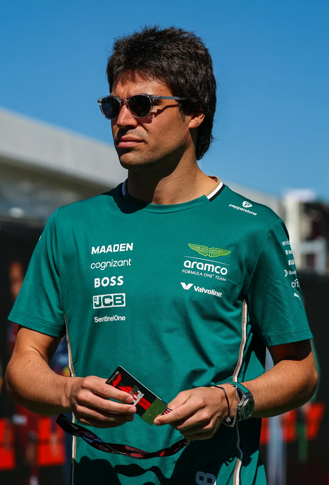

Lance Stroll

Aston Martin · Canadian · #18
Born
29/10/1998, Montreal, Canada
Nationality
Canadian
Racing number
18
F1 debut
2017 Australian Grand Prix
Height
182 cm (6 ft 0 in)
World Championships
0
Wins
0
Pole positions
1
Podiums
3
Fastest laps
0
Favourite circuit
Canada, Montreal
DNF's
31
Career Notes
Aston Martin co-owner's son. 2017 Azerbaijan podium (youngest podium finisher). Turkey pole 2020.
2025 Season
16th in championship (33 points). Best: 7th x3. Supporting Alonso in Aston Martin development.

First Podium

Turkey Pole

Aston Martin 2025